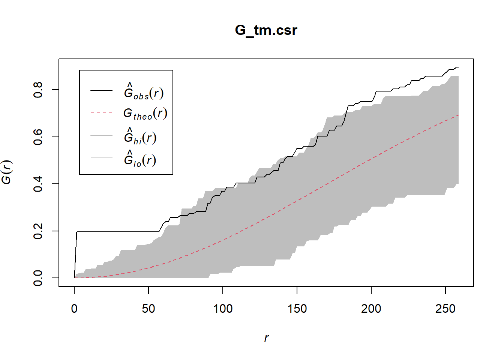
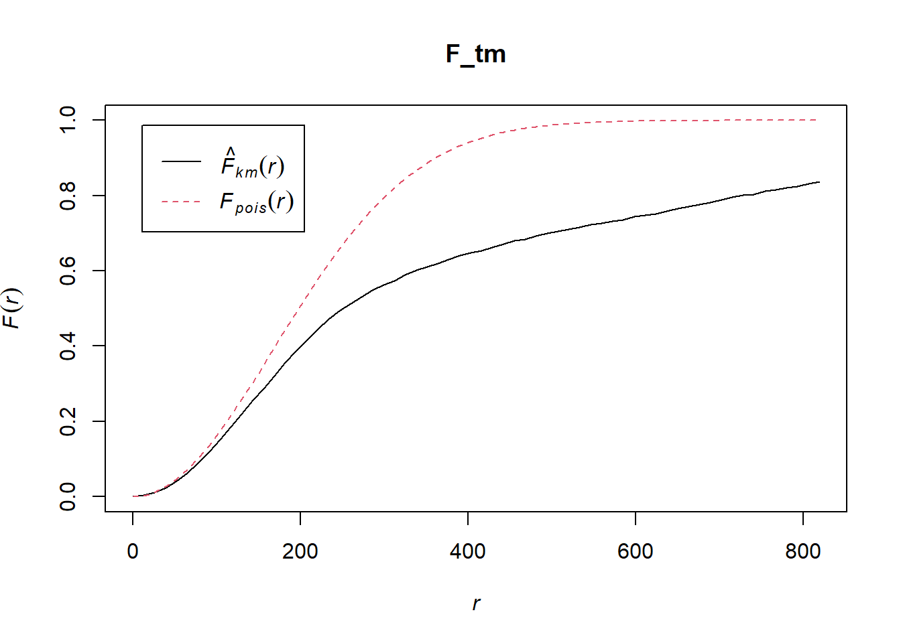
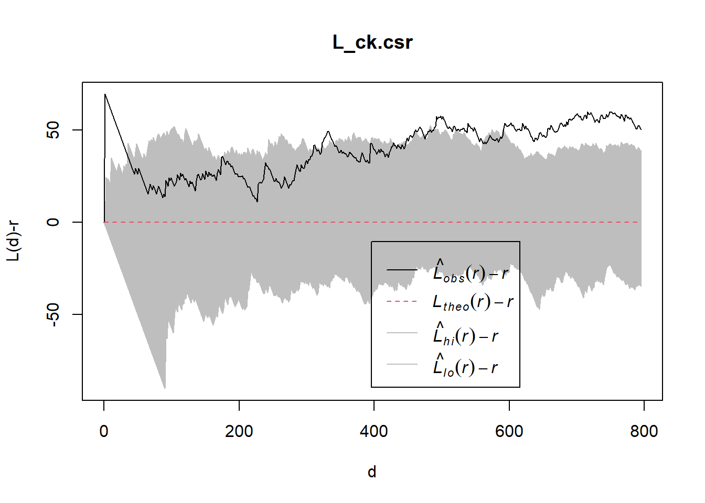
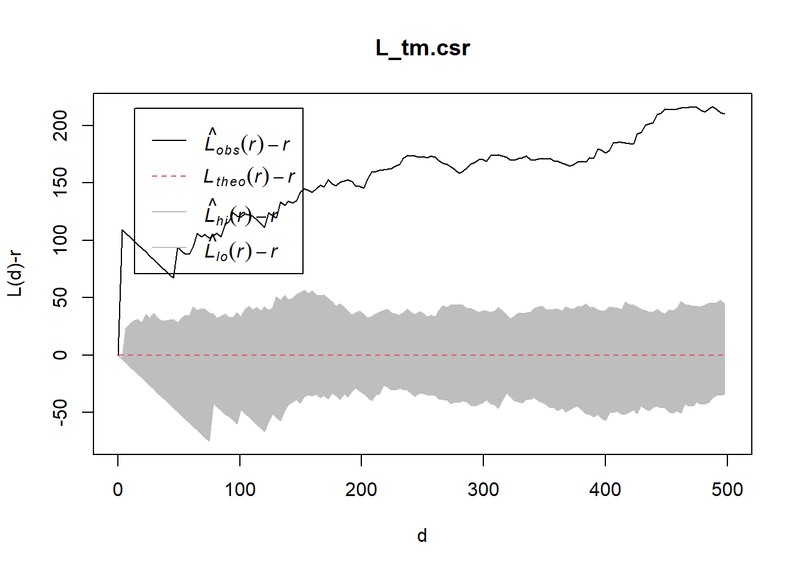
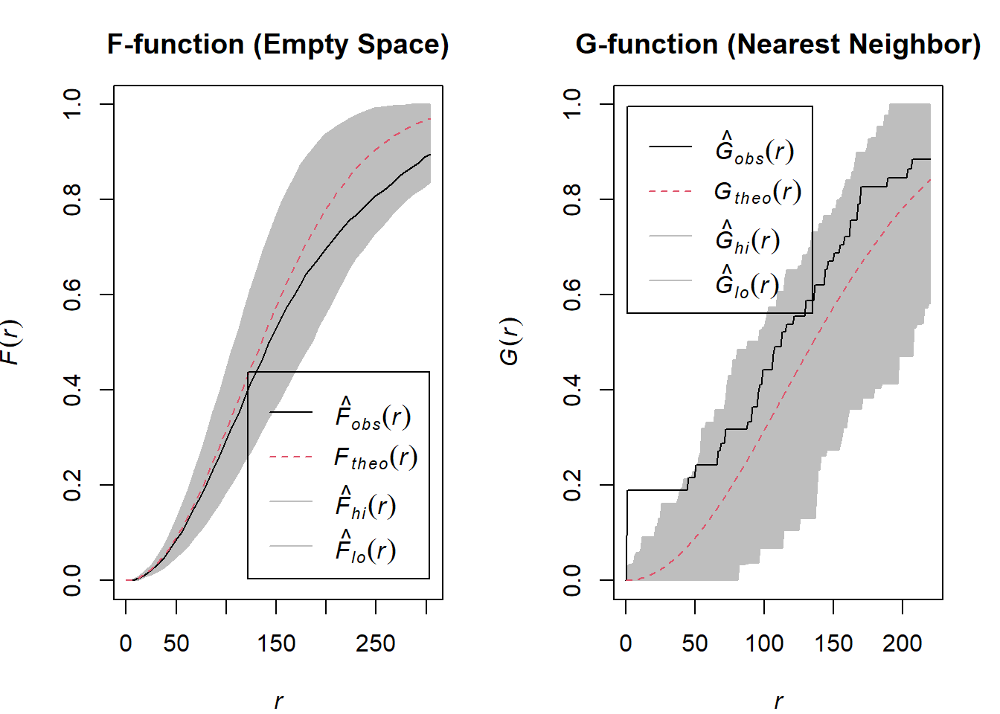
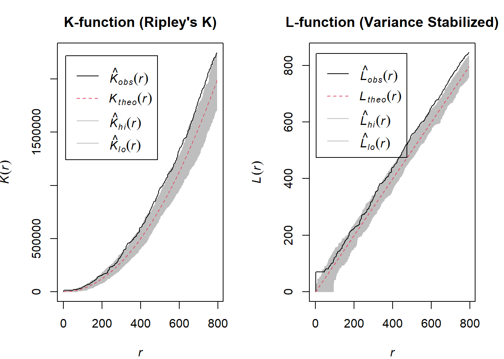

pacman::p_load(sf, spatstat, tmap, tidyverse)Hands on Exercise 2B - 2nd Order Spatial Point Patterns Analysis Methods
Overview
The 2nd order SPPA examines the spatial relationships between points in a pattern, specifically on how the presence of a point influences the location of others.
Note
To note : 2nd order SPPA investigates clustering, dispersion and randomness at various spatial scales.
This is unlike the 1st order SPPA which only looks at describing the overall density of the points (first order effects)
Getting Started!
Importing of Data
The following R packages will be used :
sf : to import manage vector based geospatial data in R
spatstat. SPPA analyses can be conducted and derive kernal desity estimation (KDE) layers
tmap : for cartographic quality static point pattern maps/interactive maps
tidyverse : A set of R packages to aid in data manipulation, analysis and visualisation.
Now let’s import the data!
library(sf)
library(tidyverse)
mpsz <- st_read("data/geospatial/MasterPlan2019SubzoneBoundaryNoSeaGEOJSON.geojson")Reading layer `URA_MP19_SUBZONE_NO_SEA_PL' from data source
`C:\cjmheidii\ISSS626 - Geospatial\Hands-on_Ex\data\geospatial\MasterPlan2019SubzoneBoundaryNoSeaGEOJSON.geojson'
using driver `GeoJSON'
Simple feature collection with 332 features and 13 fields
Geometry type: MULTIPOLYGON
Dimension: XY
Bounding box: xmin: 103.6057 ymin: 1.158699 xmax: 104.0885 ymax: 1.470775
Geodetic CRS: WGS 84childcare_sf <- st_read("data/geospatial/ChildCareServices.geojson") Reading layer `CHILDCARE' from data source
`C:\cjmheidii\ISSS626 - Geospatial\Hands-on_Ex\data\geospatial\ChildCareServices.geojson'
using driver `GeoJSON'
Simple feature collection with 1925 features and 16 fields
Geometry type: POINT
Dimension: XY
Bounding box: xmin: 103.6878 ymin: 1.247759 xmax: 103.9897 ymax: 1.462134
Geodetic CRS: WGS 84Data Preparations
Similar preparations is exactly the same as exercise 2A
extract_kml_field <- function(html_text, field_name) {
if (is.na(html_text) || html_text == "") return(NA_character_)
page <- read_html(html_text)
rows <- page %>% html_elements("tr")
value <- rows %>%
keep(~ html_text2(html_element(.x, "th")) == field_name) %>%
html_element("td") %>%
html_text2()
if (length(value) == 0) NA_character_ else value
}childcare_sf <- st_transform(childcare_sf, 3414)
mpsz_cl <-st_transform(mpsz, 3414)Plotting out visuals for 2nd order SPPA
This is repeating the steps for First order SPAA at plannign subzone level (Geospatial Data)
# convert from sf to ppp
childcare_ppp <- as.ppp(childcare_sf)
class(childcare_ppp)[1] "ppp"#Extract required study areas
pg <- mpsz_cl %>%
filter(PLN_AREA_N == "PUNGGOL")
tm <- mpsz_cl %>%
filter(PLN_AREA_N == "TAMPINES")
ck <- mpsz_cl %>%
filter(PLN_AREA_N == "CHOA CHU KANG")
jw <- mpsz_cl %>%
filter(PLN_AREA_N == "JURONG WEST")
# Creating owin object
pg_owin = as.owin(pg)
tm_owin = as.owin(tm)
ck_owin = as.owin(ck)
jw_owin = as.owin(jw)
# Combining point events and owin
childcare_pg_ppp = childcare_ppp[pg_owin]
childcare_tm_ppp = childcare_ppp[tm_owin]
childcare_ck_ppp = childcare_ppp[ck_owin]
childcare_jw_ppp = childcare_ppp[jw_owin]
# Data re-scaling (m to km)
childcare_pg_ppp.km = rescale.ppp(childcare_pg_ppp, 1000, "km")
childcare_tm_ppp.km = rescale.ppp(childcare_tm_ppp, 1000, "km")
childcare_ck_ppp.km = rescale.ppp(childcare_ck_ppp, 1000, "km")
childcare_jw_ppp.km = rescale.ppp(childcare_jw_ppp, 1000, "km")
#Plotting!
par(mfrow=c(2,2))
plot(unmark(childcare_pg_ppp.km),
main="Punggol")
plot(unmark(childcare_tm_ppp.km),
main="Tampines")
plot(unmark(childcare_ck_ppp.km),
main="Choa Chu Kang")
plot(unmark(childcare_jw_ppp.km),
main="Jurong West")
Analysing Spatial Point Process with G Function
The G function measures the distribution of the distances from an arbitrary event to its nearest event.
The Gest() function is used from the spatstat package to compute G-function.
Envelope() will also be used from the same package to perform monta carlo simulation testing!
Choa Chu Kang Planning Area
Computing G Function Estimation
set.seed(1234)Gest() is used here to compute the G function
G_CK = Gest(childcare_ck_ppp, correction = "border")
plot(G_CK, xlim=c(0,500))
Complete Spatial Randomness Test
Hypothesis!
Now with the observed spatial patterns, a hypothesis test will be conducted. The test is as follows :
Ho = The distribution of childcare services at Choa Chu Kang are randomly distributed.
H1= The distribution of childcare services at Choa Chu Kang are not randomly distributed.
Ho will be rejected if p-value is smaller than alpha value of 0.001!
Conducting of Monte Carlo Test with G function
When running the code, notice how 999 simulations are generated! (999 defined by the nsim)
G_CK.csr <- envelope(childcare_ck_ppp, Gest, nsim = 999)Generating 999 simulated realisations of CSR ...
1, 2, 3, ......10.........20.........30.........40.........50.........60..
.......70.........80.........90.........100.........110.........120.........130
.........140.........150.........160.........170.........180.........190........
.200.........210.........220.........230.........240.........250.........260......
...270.........280.........290.........300.........310.........320.........330....
.....340.........350.........360.........370.........380.........390.........400..
.......410.........420.........430.........440.........450.........460.........470
.........480.........490.........500.........510.........520.........530........
.540.........550.........560.........570.........580.........590.........600......
...610.........620.........630.........640.........650.........660.........670....
.....680.........690.........700.........710.........720.........730.........740..
.......750.........760.........770.........780.........790.........800.........810
.........820.........830.........840.........850.........860.........870........
.880.........890.........900.........910.........920.........930.........940......
...950.........960.........970.........980.........990........
999.
Done.Now we plot it out to have a look!
plot(G_CK.csr)
##Tampines Planning Area ###Computing G Function Estimation
G_tm = Gest(childcare_tm_ppp, correction = "best")
plot(G_tm)
Complete Spatial Randomness Test
Hypothesis!
Now with the observed spatial patterns, a hypothesis test will be conducted. The test is as follows :
Ho = The distribution of childcare services at Tampines are randomly distributed.
H1= The distribution of childcare services at Tampines are not randomly distributed.
Ho will be rejected if p-value is smaller than alpha value of 0.001!
Conducting of Monte Carlo Test with G function
When running the code, notice how 999 simulations are generated! (999 defined by the nsim)
G_tm.csr <- envelope(childcare_tm_ppp, Gest, correction = "all", nsim = 999)Generating 999 simulated realisations of CSR ...
1, 2, 3, ......10.........20.........30.........40.........50.........60..
.......70.........80.........90.........100.........110.........120.........130
.........140.........150.........160.........170.........180.........190........
.200.........210.........220.........230.........240.........250.........260......
...270.........280.........290.........300.........310.........320.........330....
.....340.........350.........360.........370.........380.........390.........400..
.......410.........420.........430.........440.........450.........460.........470
.........480.........490.........500.........510.........520.........530........
.540.........550.........560.........570.........580.........590.........600......
...610.........620.........630.........640.........650.........660.........670....
.....680.........690.........700.........710.........720.........730.........740..
.......750.........760.........770.........780.........790.........800.........810
.........820.........830.........840.........850.........860.........870........
.880.........890.........900.........910.........920.........930.........940......
...950.........960.........970.........980.........990........
999.
Done.Now we plot it out to have a look!
plot(G_tm.csr)
Analysing Spatial Point Process with F-Function
The F function estimates the empty space function F(r) or its hazard rate h(r) from a point pattern in a window of arbitrary shape. In this section, you will learn how to compute F-function estimation by using Fest() of spatstat package.
envelope() will also be used here.
Choa Chu Kang Planning Area
Computing F Function Estimation
F_CK = Fest(childcare_ck_ppp)
plot(F_CK)
Complete Spatial Randomness Test
Hypothesis!
Now with the observed spatial patterns, a hypothesis test will be conducted. The test is as follows :
Ho = The distribution of childcare services at Choa Chu Kang are randomly distributed.
H1= The distribution of childcare services at Choa Chu Kang are not randomly distributed.
Ho will be rejected if p-value is smaller than alpha value of 0.001!
Conducting of Monte Carlo Test with F function
When running the code, notice how 999 simulations are generated! (999 defined by the nsim)
F_CK.csr <- envelope(childcare_ck_ppp, Fest, nsim = 999)Generating 999 simulated realisations of CSR ...
1, 2, 3, ......10.........20.........30.........40.........50.........60..
.......70.........80.........90.........100.........110.........120.........130
.........140.........150.........160.........170.........180.........190........
.200.........210.........220.........230.........240.........250.........260......
...270.........280.........290.........300.........310.........320.........330....
.....340.........350.........360.........370.........380.........390.........400..
.......410.........420.........430.........440.........450.........460.........470
.........480.........490.........500.........510.........520.........530........
.540.........550.........560.........570.........580.........590.........600......
...610.........620.........630.........640.........650.........660.........670....
.....680.........690.........700.........710.........720.........730.........740..
.......750.........760.........770.........780.........790.........800.........810
.........820.........830.........840.........850.........860.........870........
.880.........890.........900.........910.........920.........930.........940......
...950.........960.........970.........980.........990........
999.
Done.Now we plot it out to have a look!
plot(F_CK.csr)
Tampines Planning Area
Computing F Function Estimation
F_tm = Fest(childcare_tm_ppp, correction = "best")
plot(F_tm)
Complete Spatial Randomness Test
Hypothesis!
Now with the observed spatial patterns, a hypothesis test will be conducted. The test is as follows :
Ho = The distribution of childcare services at Tampines are randomly distributed.
H1= The distribution of childcare services at Tampines are not randomly distributed.
Ho will be rejected if p-value is smaller than alpha value of 0.001!
Conducting of Monte Carlo Test with F function
When running the code, notice how 999 simulations are generated! (999 defined by the nsim)
F_tm.csr <- envelope(childcare_tm_ppp, Fest, correction = "all", nsim = 999)Generating 999 simulated realisations of CSR ...
1, 2, 3, ......10.........20.........30.........40.........50.........60..
.......70.........80.........90.........100.........110.........120.........130
.........140.........150.........160.........170.........180.........190........
.200.........210.........220.........230.........240.........250.........260......
...270.........280.........290.........300.........310.........320.........330....
.....340.........350.........360.........370.........380.........390.........400..
.......410.........420.........430.........440.........450.........460.........470
.........480.........490.........500.........510.........520.........530........
.540.........550.........560.........570.........580.........590.........600......
...610.........620.........630.........640.........650.........660.........670....
.....680.........690.........700.........710.........720.........730.........740..
.......750.........760.........770.........780.........790.........800.........810
.........820.........830.........840.........850.........860.........870........
.880.........890.........900.........910.........920.........930.........940......
...950.........960.........970.........980.........990........
999.
Done.Now we plot it out to have a look!
plot(F_tm.csr)
Analysing Spatial Point Process using K function
K Function measure the number of events found up to a given distance of any particular event. Again, envelope() will be used here!
Choa Chu Kang Planning Area
Computing K Function Estimation
K_ck = Kest(childcare_ck_ppp, correction = "Ripley")
plot(K_ck, . -r ~ r, ylab= "K(d)-r", xlab = "d(m)")
Complete Spatial Randomness Test
Hypothesis!
Now with the observed spatial patterns, a hypothesis test will be conducted. The test is as follows :
Ho = The distribution of childcare services at Choa Chu Kang are randomly distributed.
H1= The distribution of childcare services at Choa Chu Kang are not randomly distributed.
Ho will be rejected if p-value is smaller than alpha value of 0.001!
Conducting of Monte Carlo Test with K function
When running the code, notice how 99 simulations are generated! (99 defined by the nsim)
K_ck.csr <- envelope(childcare_ck_ppp, Kest, nsim = 99, rank = 1, glocal=TRUE)Generating 99 simulated realisations of CSR ...
1, 2, 3, 4, 5, 6, 7, 8, 9, 10, 11, 12, 13, 14, 15, 16, 17, 18, 19, 20,
21, 22, 23, 24, 25, 26, 27, 28, 29, 30, 31, 32, 33, 34, 35, 36, 37, 38, 39, 40,
41, 42, 43, 44, 45, 46, 47, 48, 49, 50, 51, 52, 53, 54, 55, 56, 57, 58, 59, 60,
61, 62, 63, 64, 65, 66, 67, 68, 69, 70, 71, 72, 73, 74, 75, 76, 77, 78, 79, 80,
81, 82, 83, 84, 85, 86, 87, 88, 89, 90, 91, 92, 93, 94, 95, 96, 97, 98,
99.
Done.Now we plot it out to have a look!
plot(K_ck.csr, . - r ~ r, xlab="d", ylab="K(d)-r")
Tampines Planning Area
Computing K Function Estimation
K_tm = Kest(childcare_tm_ppp, correction = "Ripley")
plot(K_tm, . -r ~ r,
ylab= "K(d)-r", xlab = "d(m)",
xlim=c(0,1000))
Complete Spatial Randomness Test
Hypothesis!
Now with the observed spatial patterns, a hypothesis test will be conducted. The test is as follows :
Ho = The distribution of childcare services at Tampines are randomly distributed.
H1= The distribution of childcare services at Tampines are not randomly distributed.
Ho will be rejected if p-value is smaller than alpha value of 0.001!
Conducting of Monte Carlo Test with K function
When running the code, notice how 99 simulations are generated! (99 defined by the nsim)
K_tm.csr <- envelope(childcare_tm_ppp, Kest, nsim = 99, rank = 1, glocal=TRUE)Generating 99 simulated realisations of CSR ...
1, 2, 3, 4, 5, 6, 7, 8, 9, 10, 11, 12, 13, 14, 15, 16, 17, 18, 19, 20,
21, 22, 23, 24, 25, 26, 27, 28, 29, 30, 31, 32, 33, 34, 35, 36, 37, 38, 39, 40,
41, 42, 43, 44, 45, 46, 47, 48, 49, 50, 51, 52, 53, 54, 55, 56, 57, 58, 59, 60,
61, 62, 63, 64, 65, 66, 67, 68, 69, 70, 71, 72, 73, 74, 75, 76, 77, 78, 79, 80,
81, 82, 83, 84, 85, 86, 87, 88, 89, 90, 91, 92, 93, 94, 95, 96, 97, 98,
99.
Done.Now we plot it out to have a look!
plot(K_tm.csr, . - r ~ r,
xlab="d", ylab="K(d)-r", xlim=c(0,500))
Analysing Spatial Point Process using L function
L Function uses the lest() of spatstat package.
It looks at the distances between all pairs of points in your data.
Whether its more aggregated, more regular, or completely random
Again, envelope() will be used here!
Choa Chu Kang Planning Area
Computing L Function Estimation
L_ck = Lest(childcare_ck_ppp, correction = "Ripley")
plot(L_ck, . -r ~ r,
ylab= "L(d)-r", xlab = "d(m)")
Complete Spatial Randomness Test
Hypothesis!
Now with the observed spatial patterns, a hypothesis test will be conducted. The test is as follows :
Ho = The distribution of childcare services at Choa Chu Kang are randomly distributed.
H1= The distribution of childcare services at Choa Chu Kang are not randomly distributed.
Ho will be rejected if p-value is smaller than alpha value of 0.001!
Conducting of Monte Carlo Test with K function
When running the code, notice how 99 simulations are generated! (99 defined by the nsim)
L_ck.csr <- envelope(childcare_ck_ppp, Lest, nsim = 99, rank = 1, glocal=TRUE)Generating 99 simulated realisations of CSR ...
1, 2, 3, 4, 5, 6, 7, 8, 9, 10, 11, 12, 13, 14, 15, 16, 17, 18, 19, 20,
21, 22, 23, 24, 25, 26, 27, 28, 29, 30, 31, 32, 33, 34, 35, 36, 37, 38, 39, 40,
41, 42, 43, 44, 45, 46, 47, 48, 49, 50, 51, 52, 53, 54, 55, 56, 57, 58, 59, 60,
61, 62, 63, 64, 65, 66, 67, 68, 69, 70, 71, 72, 73, 74, 75, 76, 77, 78, 79, 80,
81, 82, 83, 84, 85, 86, 87, 88, 89, 90, 91, 92, 93, 94, 95, 96, 97, 98,
99.
Done.Now we plot it out to have a look!
plot(L_ck.csr, . - r ~ r, xlab="d", ylab="L(d)-r")
Tampines Planning Area
Computing K Function Estimation
L_tm = Lest(childcare_tm_ppp, correction = "Ripley")
plot(L_tm, . -r ~ r,
ylab= "L(d)-r", xlab = "d(m)",
xlim=c(0,1000))
Complete Spatial Randomness Test
Hypothesis!
Now with the observed spatial patterns, a hypothesis test will be conducted. The test is as follows :
Ho = The distribution of childcare services at Tampines are randomly distributed.
H1= The distribution of childcare services at Tampines are not randomly distributed.
Ho will be rejected if p-value is smaller than alpha value of 0.001!
Conducting of Monte Carlo Test with L function
When running the code, notice how 99 simulations are generated! (99 defined by the nsim)
L_tm.csr <- envelope(childcare_tm_ppp, Lest, nsim = 99, rank = 1, glocal=TRUE)Generating 99 simulated realisations of CSR ...
1, 2, 3, 4, 5, 6, 7, 8, 9, 10, 11, 12, 13, 14, 15, 16, 17, 18, 19, 20,
21, 22, 23, 24, 25, 26, 27, 28, 29, 30, 31, 32, 33, 34, 35, 36, 37, 38, 39, 40,
41, 42, 43, 44, 45, 46, 47, 48, 49, 50, 51, 52, 53, 54, 55, 56, 57, 58, 59, 60,
61, 62, 63, 64, 65, 66, 67, 68, 69, 70, 71, 72, 73, 74, 75, 76, 77, 78, 79, 80,
81, 82, 83, 84, 85, 86, 87, 88, 89, 90, 91, 92, 93, 94, 95, 96, 97, 98,
99.
Done.Now we plot it out to have a look!
plot(L_tm.csr, . - r ~ r,
xlab="d", ylab="L(d)-r", xlim=c(0,500))
Example 1 : Comparing between F, G functions.
We have gone through the different types of functions within the 2nd order SPAA.
Therefore, now the graphs from Choa Chu Kang will be put together to compare and analyse.
Personally, just felt this will be interesting to try to put together and compare as a case study/example. Something similar is done in Example 2.
Why is F and G compared separately from functions K and L?
This is because of the definitions of all 4 functions…
Functions F and G together will tell the story: - F alone: “How far are random spots from any point?” - G alone: “How far are points from each other?” - Together: “Is the pattern the same from both perspectives?”
This is different from Functions K and L.
Functions K and L are instead compared with each other to CONFIRM the same story is told to check calculations. - If K < πr² AND L < r : BOTH confirm regularity - If K > πr² AND L > r : BOTH confirm clustering - If the formulas dont agree with each other, it shows an error in calculations!!
Calculations
par(mfrow = c(1, 2), mar = c(4, 4, 3, 2))
plot(F_CK.csr, main = "F-function (Empty Space)")
plot(G_CK.csr, main = "G-function (Nearest Neighbor)")
par(mfrow = c(1, 1))With a similar pattern and a small gray interval in visual the confidence level is high for both functions.
Since all values within the F and G function graphs are evenly spaced out, both functions show that there is no local clustering and the childcare centres in Choa Chu Kang are evenly spaced apart.
Example 2 : Comparing K and L functions
par(mfrow = c(1, 2), mar = c(4, 4, 3, 2))
plot(K_ck.csr, main = "K-function (Ripley's K)")
plot(L_ck.csr, main = "L-function (Variance Stabilized)")
par(mfrow = c(1, 1))K and L Functions
Since both K and L values all fall significantly below their theoretical expectations (K << πr² and L << r), Both K and L functions show the strongly below expected confirms global regularity where there will be fewer neighbouring childcare centres at every distance than would be expected.
Hence the childcare centres within Choa Chu Kang are actually systematically spaced apart where there is a minimum space between a centre to another.